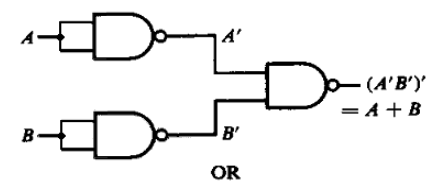
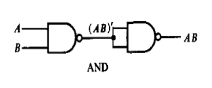
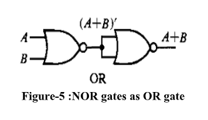
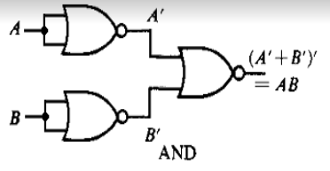

Home About Us
Theory Procedure Simulation Quiz
NAND gate is actually a combination of two logic gates: an AND gate followed by a NOT gate. Its output is the complement of the output of an AND gate. This gate can have a minimum of two inputs. By using only NAND gates, we can realize all logic functions: AND, OR, NOT, Ex-OR, Ex-NOR, and NOR. Hence, this gate is also known as a universal gate.
From DeMorgan’s theorems:
(A.B)' = A' + B'
(A'.B')' = A' + B' = A + B
So, by giving the inverted inputs to a NAND gate, we obtain the OR operation at the output.
A NAND gate produces the complement of an AND gate. So, if the output of a NAND gate is inverted, the overall output will be that of an AND gate.
Y = ((A.B)')' = (A.B)
We can now start constructing the circuit. First, note that the entire expression is inverted, and we have three terms ANDed. This means that we must use a 3-input NAND gate. Each of the three terms is itself a NAND expression. Finally, negated single terms can be generated with a 2-input NAND gate acting as an inverted. The expression illustrates a circuit using NAND gates only.
F = ((C'.B.A)'(D'.C.A)'(C.B'.A)')'
NOR gate is actually a combination of two logic gates: an OR gate followed by a NOT gate. Its output is the complement of the output of an OR gate. This gate can have a minimum of two inputs, and the output is always one. By using only NOR gates, we can realize all logic functions: AND, OR, NOT, Ex-OR, Ex-NOR, and NAND. Hence, this gate is also called a universal gate.
A NOR produces the complement of an OR gate. So, if the output of a NOR gate is inverted, the overall output will be that of an OR gate.
Y = ((A+B)’)’ = (A+B)
From DeMorgan’s theorems:
(A+B)’ = A’B’
(A’+B’)’ = A’’B’’ = AB
So, by giving the inverted inputs to a NOR gate, we obtain the AND operation at the output.
Designing a circuit with NOR gates only uses the same basic techniques as designing a circuit with NAND gates; that is, the application of deMorgan’s theorem. The only difference between NOR gate design and NAND gate design is that the former must eliminate product terms and the latter must eliminate sum terms.
F = (((C.B'.A)+(D.C'.A)+(C.B'.A))')'